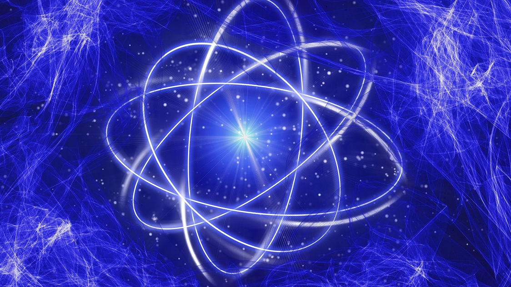

Internet Quântica
Segundo Ronald Hansen, futuramente haverá uma rede quântica global ainda mais avançada que a internet atual, permitindo novos tipos de comunicação e computação. A pesquisa apresentada aborda o teletransporte quântico, fenômeno que possibilita transferir informações entre locais distintos sem a necessidade de deslocar fisicamente a matéria.
como funciona?
A internet atual usa bits (0 ou 1), o que limita a transmissão. Já a internet quântica usará qubits, que podem representar 0 e 1 ao mesmo tempo, permitindo realizar muitos cálculos simultaneamente e ampliar a capacidade de processamento. A infraestrutura para a internet quântica exige muito investimento, incluindo a criação de estações de trabalho com configurações especiais para suportar essa tecnologia.
Segurança na internet quântica
A internet quântica promete maior segurança, pois usa propriedades das partículas subatômicas que impedem o roubo de dados. Qualquer tentativa de espionar a rede quântica perturba o estado das partículas e altera os qubits, fazendo a mensagem se autodestruir. Embora ainda esteja em fase de testes, a tecnologia pode abrir caminho para conexões mais amplas e seguras.
Os principais desafios da internet quântica são:
- Infraestrutura: exige avanços nas qubits e em redes de fibra óptica adequadas para suportar a comunicação quântica.
- Correção de erros: como os qubits são muito sensíveis a interferências, é necessário criar métodos eficientes para garantir a confiabilidade das transmissões.
- Custo e escalabilidade: o desenvolvimento é caro e tornar a tecnologia acessível em larga escala será um grande desafio.
O Futuro da Internet Quântica
O futuro da internet quântica aponta para uma revolução nas comunicações, oferecendo mais segurança e velocidade. O teletransporte quântico é apenas o começo das inovações. Pesquisas e testes já estão em andamento, aproximando a sociedade de um cenário em que essa tecnologia fará parte do cotidiano digital, transformando a forma de interação e compartilhamento de dados.